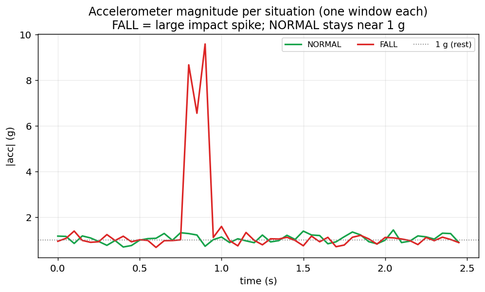

跌倒後，10 秒內
被發現
一支手錶，把「無人察覺的跌倒」變成「自動求救」——邊緣 AI 即時偵測、雲端自動升級、守護者一鍵聯動。
報告人 ____ ｜ 指導教授 ____ ｜ 課程 ____ · ← → 翻頁
長者跌倒，最大的敵人是時間
獨居長者尤其致命——真正的關鍵在「多快被發現」。
長者常不隨身帶手機，跌倒當下也難掏出、難操作。
坐下／躺下／跌倒都帶撞擊特徵，閾值會誤判、漏判。
但沒人知道。」
這就是我們要消滅的空窗——接下來，看我們怎麼把它壓進 10 秒。
一支手錶，把跌倒變成10 秒內的自動求救
給獨居與高齡長者，以及在乎他們的家人。
手錶 + 邊緣 AI 連續判讀，低延遲、可離線。
FALL → 詢問 → 無回應自動 SOS；倒地／心率飆高則直接 SOS。
即時通知守護者，一鍵指派前往／呼叫回手錶。
我們真的做出來了
兩支手錶 App ＋ 一支守護者手機 App，全部實機可運行。
戴在手上連續判讀情境；偵測到跌倒就 SOS 倒數、本地求救。
補強公開資料的缺口——在真機上自己錄資料、回流重訓。
POST /api/training守護者隨身的求救入口；跌倒告警一推到手機，立刻知道。
守護者的指揮中心：所有配戴者狀態、告警、定位一頁掌握。
按下播放，看它真的動起來
一次跌倒，如何在 10 秒內變成自動求救——逐步演示。
整個系統，我們分成四大模組完成
從資料到使用者，端到端自己打通——下一頁先看系統全貌，再依模組拆解。
公開資料集大幅篩選，再用自製手錶工具回流標註，把訓練資料做乾淨。
P.08 資料來源 · P.09 補強工具跌倒偵測模型（RandomForest）打包成 posture-api，在邊緣節點即時推論、可離線。
ThingsBoard 規則鏈：偵測 → 自動升級 → 一鍵派遣，全自動編排。
P.12 戰情台 · P.13 規則鏈 · P.14 流程手錶 ×2（日常偵測／訓練採集）＋ 守護者手機戰情台。
P.04 做了什麼 · P.05 互動演示先看全貌：三層架構，對齊 oneM2M 標準
手錶 → 邊緣（跌倒偵測）→ 雲端，三層分離又協同；後面逐塊拆解。
我們的 AI 吃真實資料，不是玩具
Kaggle 公開資料集，經大幅篩選與重建才餵進模型。
ziya07 · 源自 Montreal「Multiple Cameras Fall」跌倒影片多模態模擬
坐／躺／彎腰 ＝ 像跌倒的假性動作（橘）
資料不夠？我們做了一支手錶採集工具
在真機上選標籤、錄 5 秒、上傳回流，讓模型越補越準。
公開資料集再乾淨，也跟真手錶的分布有落差——尤其坐下／躺下這類假性跌倒。這支獨立 App 讓我們在真機上自己補標註，跌倒判得更穩。
POST /api/training → 併入重訓 → 模型越用越準它真的有效，而且看得懂為什麼
問題其實是二元的：是跌倒，還是只是坐下／躺下？
跌倒
非跌倒

Azure IoT Edge＝把模型送上邊緣的控制塔
雲端負責打包、版本化、部署模型；推論仍在邊緣執行。
守護者一眼掌握：誰、在哪、發生什麼
即時狀態、地圖定位、告警歷史與一鍵派遣，一頁掌握。
| 類型 | 時間 | 嚴重度 | 狀態 | 動作 |
|---|---|---|---|---|
| 倒地 Collapse | 2 分鐘前 | ! | 處理中 | |
| 疑似跌倒 Fall? | 今天 09:14 | ! | 已恢復 | 自行起身 |
升級邏輯全寫在規則鏈裡，不寫死在程式
GuardianRules：用 ThingsBoard 原生節點編排，改規則不必改程式。
一次跌倒，四個角色如何接力求救
手錶 → 邊緣模組 → 規則鏈 → 守護者，全自動接力求救。
偵測→升級→求救全自動；人只做最後一哩的「指派前往」。
一支手錶，守住跌倒後的黃金 10 秒
邊緣即時偵測 · 雲端自動升級 · 守護者一鍵聯動——從資料到使用者，端到端我們自己打通。
訓練過的二元（跌倒／非跌倒）分類器，跌倒分得乾淨；低延遲、可離線。
規則鏈全自動：偵測 → 詢問 → SOS；守護者一鍵前往。
手錶採集回流 ＋ Azure IoT Edge 持續訓練閉環。
· 已可實機 demo：校園 IP 直達 + /api/demo/inject 備援
· 邊緣用模擬器；可升級 WSL2 真實 runtime
· 訓練在本機；未來接 Azure ML 雲端 CT
· 目前以公開（模擬）資料驗證；真實場域需手錶資料持續校正